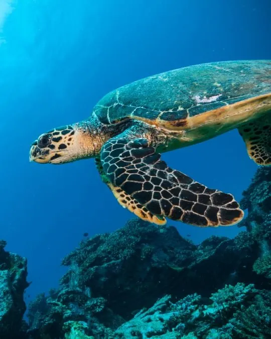
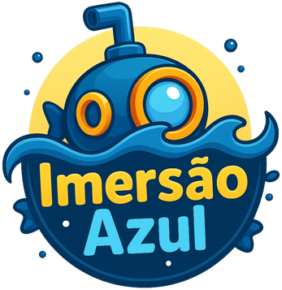
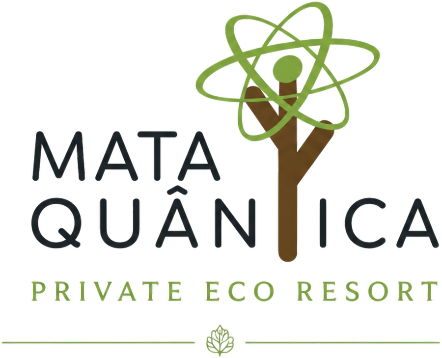

Início / Projetos
Nossos projetos
Da educação às experiências imersivas, da floresta ao bem-estar: caminhos diferentes para aproximar pessoas do oceano. Tem livro, tem realidade virtual, tem mata preservada e tem gente.
Role a página, escolha um projeto e descubra onde a sua história pode se cruzar com a nossa.


E se o fundo do mar coubesse dentro da sala de aula? O Imersão Azul leva a Cultura Oceânica para as escolas com 11 livros autorais, realidade virtual, plataforma digital e uma jornada gamificada que transforma ciência em encantamento.
Você está no aeroporto, coloca os óculos e, em segundos, está nadando entre tartarugas e cardumes. O Mundo Submarino 360° leva o oceano até onde as pessoas estão, com uma experiência sensorial que ninguém esquece.
Escotilhas, luzes azuis e o som do mar: crianças e adultos entram juntos num submarino e partem numa expedição pelos ecossistemas marinhos. Conhecimento que entra pelos olhos, pelos ouvidos e pelo coração.

Boiar, respirar no ritmo das ondas, silenciar. A Oceanoterapia usa a água e a natureza como caminho para presença e bem-estar, e quem se reconecta com o mar passa a querer protegê-lo.

A Mata Atlântica é um dos biomas mais ameaçados do planeta. Às margens da Baía do Iguape, a Mata Quântica protege 100 hectares de floresta, em processo para se tornar uma Reserva Particular do Patrimônio Natural (RPPN), e é a casa do Instituto.
Oceanógrafo com décadas de vida no mar, Marcelo Telles transforma as travessias que viveu em palestras que emocionam e fazem pensar, em congressos, escolas e empresas, inclusive com óculos de realidade virtual.
Desde 2019 caminhamos ao lado das famílias de pescadores e marisqueiras e das comunidades quilombolas da Baía do Iguape: esporte para os jovens, regatas de canoa, educação ambiental nas escolas e presença nas datas que importam.
O banco de imagens e vídeos do oceano do Instituto Gaia Soul, com foco em imagens subaquáticas e em 360°. Cada foto doada vira material educativo e chega a estudantes de todo o país.
Você é fotógrafo, mergulhador ou cinegrafista? Suas imagens podem ensinar muita gente a amar o mar. Colabore com o Blue Bank.
Escolas, empresas e parceiros podem levar a Cultura Oceânica a cada vez mais pessoas.